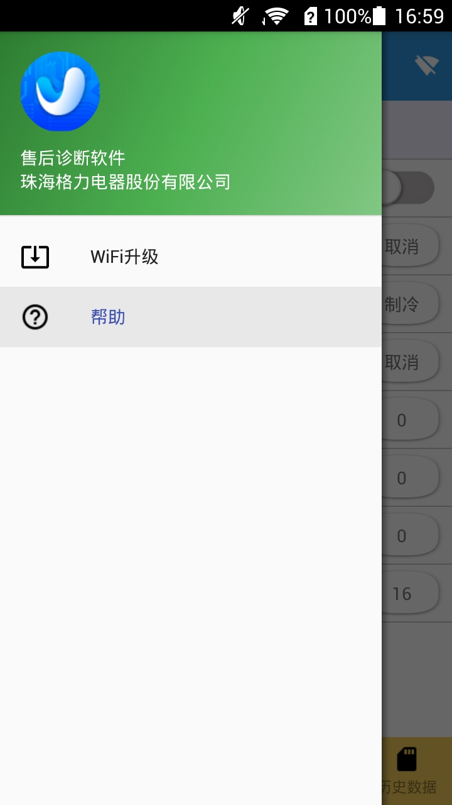
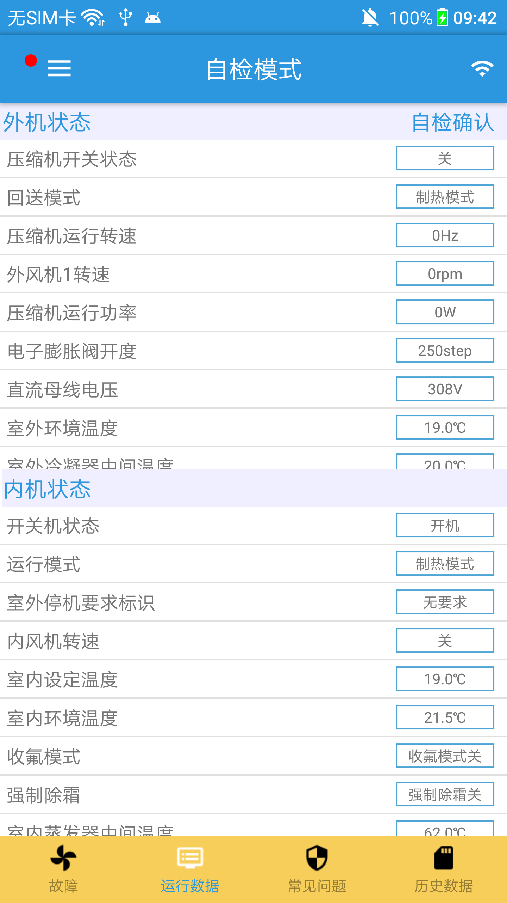
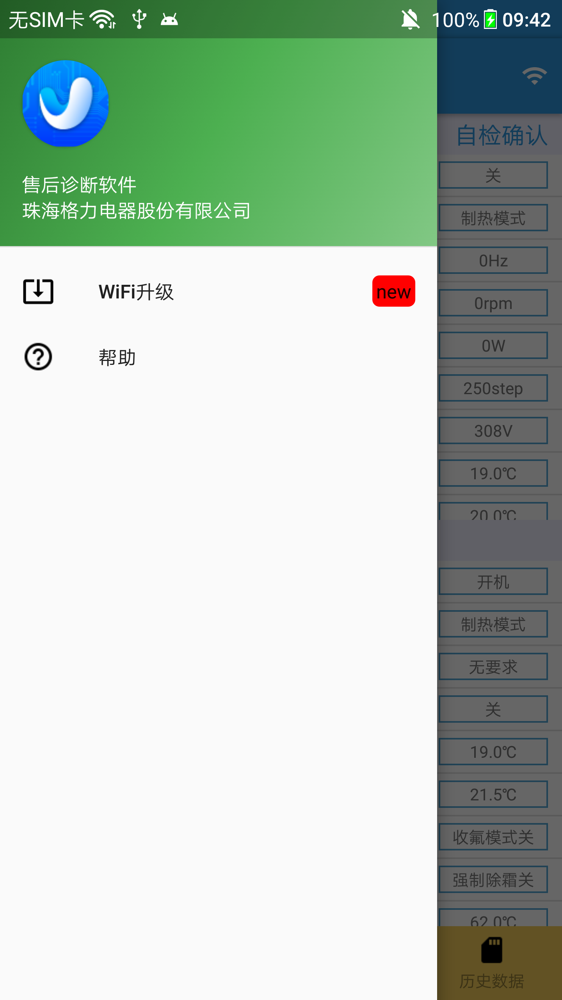
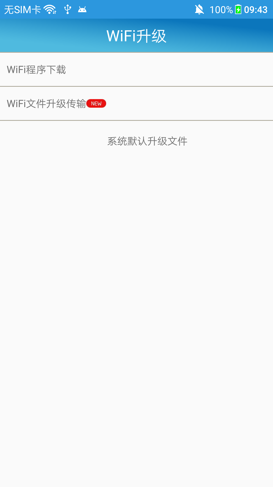
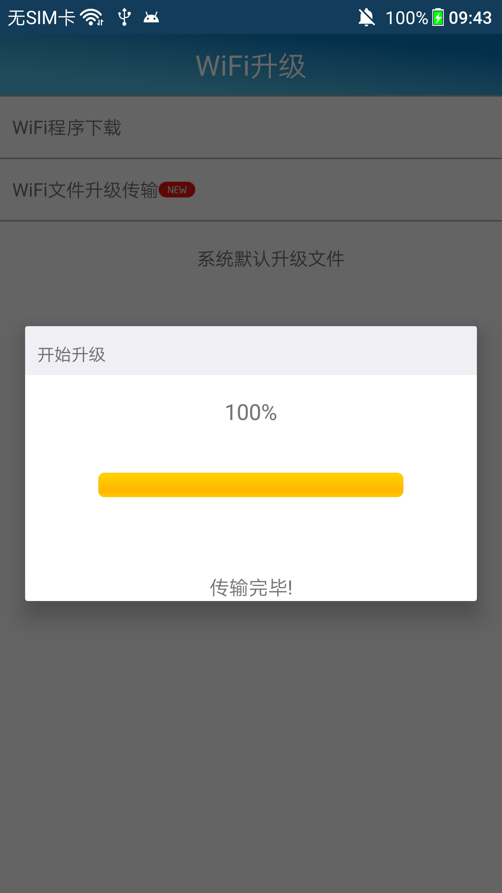
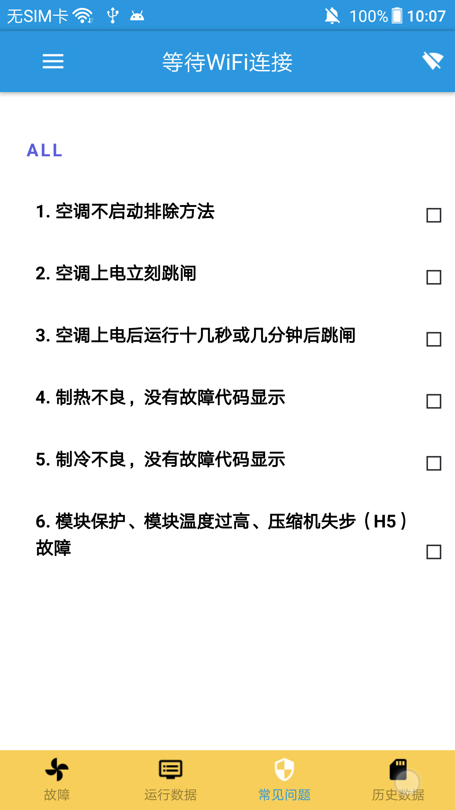
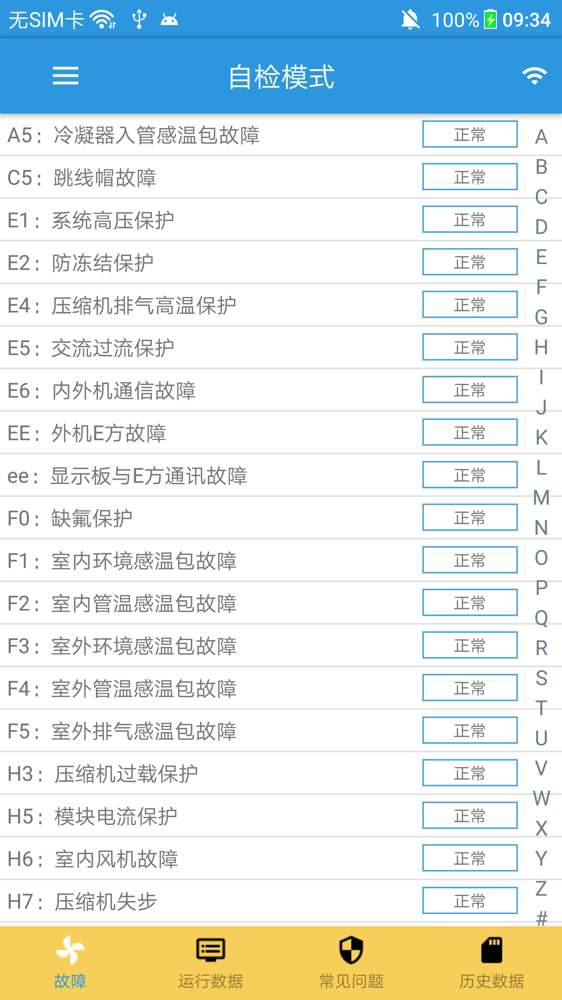
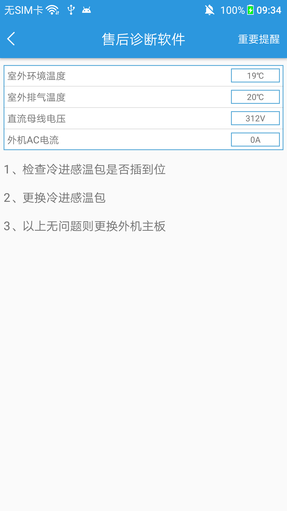

安装成功后，请将机组上电，然后打开手机的wifi功能，扫描当前能搜索到的网络。 将手机加入到空调的网络，网络名固定格式为：“G-xxxxx”(x表示数字或者a-f的字母)， 初始密码为：“12345678”如图所示。如果没有连接上Wifi，进入App将不会有监控数据，数据会显示空白，标题栏中显示“等待WiFi连接”， WiFi连接之后如果调试仪是刚上电状态则标题栏显示“等待自检确认”，用户点击自检确认按钮即可进入自检模式。

当app开启之后，app会自动检测当前WiFi模块的版本，若发现需要升级，会在app左上角（侧滑栏导航图标）以小红点的方式提示用户升级，点击侧滑栏的WiFi升级功能，进入到WiFi升级页面。




此界面显示了若干常见问题，可点击逐级进入，点击上方导航栏可以返回点击界面：

室内故障和室外故障在同一故障界面，每种故障内容包含了该故障名称和故障代码以及该故障的值（正常或故障）。并且，用户可以点击列表项，进入具体故障显示界面。即使当WiFi离线的时候，故障也可以实现点击查找相应的解决办法。

用户点击故障列表项，就可以进入到该界面，此界面展示了对应故障的维修方法。
如下图，右上角的重要提醒可以点击里面包含维修的通用条件，蓝色的框内显示的是与故障相关的状态数据，下方则是该故障维修方法。

用户点击导航栏的“运行数据”，就可以切换到运行数据界面，该界面包含了外机状态和内机状态，并且外机状态和内机状态是以两个不同的列表显示。状态列表项包含了该状态名和状态值。
如下图，外机状态中的压缩机运行转速为0Hz；
该界面包含了发送邮件功能以及导出本地历史数据，用户可以直接选中需要发送的历史数据，然后点击下方的邮件图标即可。
导出本地历史数据：
打开手机文件管理，文件路径为：/Monitor/ReceiveData。在此路径下有历史数据文件，用户可自行导出。